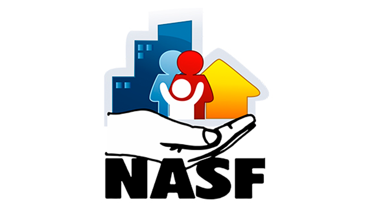

O NASF (Núcleo de Apoio à Saúde da Família) é uma estratégia que visa ampliar a capacidade das equipes de
Saúde da Família em atender as necessidades de saúde da população em seu território de atuação...
×
NASF e e-Multi

O NASF (Núcleo de Apoio à Saúde da Família) é uma estratégia que visa ampliar a capacidade das equipes
de Saúde da Família em atender as necessidades de saúde da população em seu território de atuação. Ele
busca incorporar novos conhecimentos e práticas para contribuir com a integralidade da atenção à saúde.
Composta por profissionais de diversas áreas, como assistentes sociais, farmacêuticos, fisioterapeutas,
nutricionistas, entre outros, o NASF atua em diferentes dimensões: pedagógica, terapêutica e
institucional. No entanto, suas atividades enfrentam desafios como infraestrutura limitada, gestão do
trabalho e compreensão variada do seu papel por parte dos profissionais e usuários.
eMulti (Equipes Multidisciplinares)
As eMulti, por sua vez, representam uma ressignificação do acesso ao cuidado integral e longitudinal na
Atenção Primária à Saúde (APS), destacando a importância da multiprofissionalidade e das especialidades
para abordar desde a promoção da saúde até o tratamento e reabilitação. Elas atuam de maneira
complementar e integrada às demais equipes da APS, em articulação interinstitucional e com a rede de
atenção à saúde. Com diretrizes que visam facilitar o acesso, promover a integralidade da atenção,
ampliar o escopo de práticas em saúde e contribuir para a resolutividade da APS, as eMulti priorizam
ações como atendimento individual e em grupo, visitas domiciliares, apoio matricial, discussão de casos
e práticas interinstitucionais. Além disso, recomendam o uso de tecnologias da informação e comunicação
(TICs) e a presença de especialistas em áreas específicas, como cardiologia, psicologia, ginecologia,
entre outros, para garantir uma abordagem abrangente e eficaz.
Potencialidades e Desafios da e-Multi
As e-Multi apresentam potencialidades significativas, como a possibilidade de oferecer cuidados mais
abrangentes e especializados na APS, favorecendo o acesso da população a uma gama mais ampla de serviços
de saúde. Além disso, ao integrar diferentes profissionais e especialidades, elas podem contribuir para
uma atenção mais completa e resolutiva, promovendo uma abordagem mais holística da saúde. No entanto,
enfrentam desafios, como a necessidade de uma articulação eficaz entre os diversos atores envolvidos,
infraestrutura adequada, qualificação dos profissionais e garantia de acesso equitativo aos serviços,
especialmente para populações vulneráveis e em áreas remotas.
Em suma, as e-Multi representam uma estratégia promissora para fortalecer a APS e garantir o acesso
equitativo e integral aos serviços de saúde, desde a promoção até a reabilitação, contribuindo para a
melhoria da qualidade de vida e o bem-estar da população.